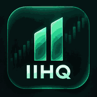

Investing Intelligence HQ
You're offline. Live market data and private account details aren't available without a connection. No balances or quotes are being shown from a cache.
Try reconnecting
You're offline. Live market data and private account details aren't available without a connection. No balances or quotes are being shown from a cache.
Try reconnecting